Lesson 1: An Introduction to Psychophysical Modelling¶
What is psychophysics?¶
Psychophysics studies the quantitative relationship between physical stimuli and the perceptions or decisions they produce. The key insight is that perception is not deterministic: the same physical stimulus does not always produce the same internal representation. Noise — arising from photoreceptor variability, neural transmission, working memory limitations, and random fluctuations throughout the sensory hierarchy — means that every measurement is uncertain.
A psychophysical model formalises this noise to link three things:
The stimulus (a physical quantity such as the number of dots on a screen).
The internal representation (a noisy encoding of the stimulus).
The response (a forced choice, a rating, a reaction time).
By fitting such a model to behavioural data we can infer parameters that are not directly observable — things like how much noise the brain adds to a given stimulus, or what prior beliefs the observer brings into the experiment. This inference is what separates psychophysical modelling from simple curve-fitting: we get posterior distributions over interpretable parameters, with proper uncertainty quantification.
The bauer library¶
bauer (Bayesian Estimation of Perceptual, Numerical and Risky Choice) is a Python library that makes hierarchical Bayesian psychophysical modelling easy. It is built on PyMC and ArviZ and provides:
Ready-to-use model classes for magnitude comparison, psychometric functions, and risky choice — no need to hand-code PyMC models.
Hierarchical fitting by default: each participant gets their own parameters, but they are regularised by a shared group-level distribution.
Regression support via patsy formulas — e.g.
regressors={'nu': 'C(condition)'}to estimate noise separately per condition.Posterior predictive checks (PPC) with a single
model.ppc(data, idata)call.Full ArviZ integration for trace diagnostics, HDI plots, ELPD comparison, and more.
In these tutorials we walk through the main model families, starting from first principles.
The Noisy Logarithmic Coding (NLC) model¶
When we judge quantities — the number of coins in a pile, the size of a reward — our internal representations are noisy. The NLC model posits that the brain encodes numerical magnitude \(n\) on a logarithmic scale, and that this log-representation is corrupted by Gaussian noise:
The logarithmic encoding has two important consequences:
Weber’s law falls out automatically. Because the noise \(\nu\) is constant on a log scale, the absolute noise on the original scale grows in proportion to the magnitude: equal log-space noise means proportionally larger linear-space uncertainty for big numbers than for small ones.
Scale invariance: when we plot the psychometric function against the log-ratio \(\log(n_2/n_1)\), all curves for different reference magnitudes \(n_1\) collapse onto a single sigmoid. This is a direct and falsifiable prediction of the model.
The decision rule¶
Given two stimuli \(n_1\) and \(n_2\) with independent log-space noise, the probability of choosing \(n_2\) as the larger is
where \(\Phi\) is the standard normal CDF, \(\nu_1\) is the noise on \(n_1\) (the first-presented option) and \(\nu_2\) is the noise on \(n_2\) (the second-presented option).
In tasks where stimuli are shown sequentially (the observer perceives \(n_1\), holds it in working memory, then perceives \(n_2\)), memory retention may add noise. The model therefore allows \(\nu_1 \neq \nu_2\). In simultaneous-presentation tasks a single shared \(\nu\) is sufficient.
[1]:
import warnings; warnings.filterwarnings('ignore')
import numpy as np
import matplotlib.pyplot as plt
import seaborn as sns
from scipy.stats import norm as scipy_norm
# ── Scale invariance demo ─────────────────────────────────────────────────────
nu = 0.45 # equal noise for both options
n1_vals = [5, 10, 20, 28]
n2_linear = np.linspace(1, 60, 300)
log_ratios = np.linspace(-1.8, 1.8, 300)
fig, axes = plt.subplots(1, 2, figsize=(11, 4))
pal = sns.color_palette('YlOrRd', len(n1_vals))
for (n1, c) in zip(n1_vals, pal):
p_lin = scipy_norm.cdf(np.log(n2_linear / n1) / (np.sqrt(2) * nu))
p_log = scipy_norm.cdf(log_ratios / (np.sqrt(2) * nu))
axes[0].plot(n2_linear, p_lin, color=c, lw=2, label=f'n1={n1}')
axes[1].plot(log_ratios, p_log, color=c, lw=2, label=f'n1={n1}')
for ax in axes:
ax.axhline(0.5, ls='--', c='gray', lw=1)
ax.set_ylim(-0.03, 1.03)
ax.legend(title='n1', fontsize=8)
sns.despine(ax=ax)
axes[0].axvline(0, ls='--', c='gray', lw=1)
axes[1].axvline(0, ls='--', c='gray', lw=1)
axes[0].set_xlabel('n2 (linear)')
axes[1].set_xlabel('log(n2 / n1)')
axes[0].set_ylabel('P(chose n2)')
axes[0].set_title('Linear scale — curves spread out')
axes[1].set_title('Log-ratio scale — curves collapse')
plt.suptitle('Scale invariance: log encoding makes all n₁ curves identical', y=1.02)
plt.tight_layout()
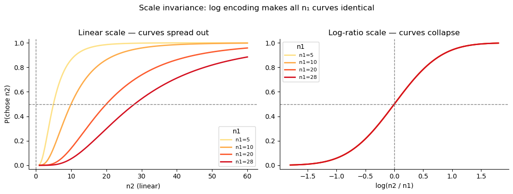
The psychometric function: noise, precision, and asymmetry¶
1. Noise level controls the slope¶
The slope of the psychometric function is entirely determined by the combined noise \(\sigma_\text{total} = \sqrt{\nu_1^2 + \nu_2^2}\). More noise → shallower curve → worse discrimination. The left panel below illustrates this for equal noise on both options (\(\nu_1 = \nu_2 = \nu\)).
2. Asymmetric noise flattens but does not shift the curve¶
When one option is noisier than the other — for instance because \(n_1\) was encoded a few seconds ago and is now degraded in working memory — the midpoint of the curve (\(P = 0.5\) at \(\log(n_2/n_1) = 0\)) does not shift: asymmetric noise alone does not produce a bias, it just makes discrimination harder.
The right panel illustrates a subtlety: even when the total noise budget \(\nu_1 + \nu_2\) is held constant, redistributing it unequally raises \(\sigma_\text{total} = \sqrt{\nu_1^2 + \nu_2^2}\) (by Cauchy-Schwarz, this is minimised when \(\nu_1 = \nu_2\)). So working-memory degradation does not just “move” noise from one option to the other — it genuinely costs precision.
[2]:
log_r = np.linspace(-2, 2, 300)
fig, axes = plt.subplots(1, 2, figsize=(11, 4))
# Left: noise level → precision (equal noise on both options)
ax = axes[0]
for nu_val, label, c in [(.2, 'ν = 0.20 (sharp)', '#08519c'),
(.5, 'ν = 0.50', '#3182bd'),
(1., 'ν = 1.00 (noisy)', '#bdd7e7')]:
sigma = np.sqrt(2) * nu_val # nu1 = nu2 = nu_val
ax.plot(log_r, scipy_norm.cdf(log_r / sigma), lw=2, color=c, label=label)
ax.axhline(.5, ls='--', c='gray', lw=1); ax.axvline(0, ls='--', c='gray', lw=1)
ax.set_xlabel('log(n2/n1)'); ax.set_ylabel('P(chose n2)')
ax.set_title('Effect of noise level (ν₁ = ν₂ = ν)')
ax.legend(); sns.despine(ax=ax)
# Right: same total noise budget ν₁ + ν₂ = 0.80, but distributed differently
# Key: σ_total = √(ν₁² + ν₂²) is MINIMISED when ν₁ = ν₂ (Cauchy-Schwarz).
# So asymmetric noise → higher σ_total → flatter curve, even at equal total.
ax = axes[1]
cases = [
(0.4, 0.4, 'Equal ν₁=ν₂=0.40 (sum=0.80)', '#1a9850'),
(0.55, 0.25, 'Mild asymmetry ν₁=0.55, ν₂=0.25 (sum=0.80)', '#f46d43'),
(0.7, 0.1, 'Strong asymmetry ν₁=0.70, ν₂=0.10 (sum=0.80)', '#a50026'),
]
for nu1, nu2, label, c in cases:
sigma = np.sqrt(nu1**2 + nu2**2)
ax.plot(log_r, scipy_norm.cdf(log_r / sigma), lw=2, color=c,
label=f'{label} (σ={sigma:.2f})')
ax.axhline(.5, ls='--', c='gray', lw=1); ax.axvline(0, ls='--', c='gray', lw=1)
ax.set_xlabel('log(n2/n1)')
ax.set_title('Same total noise (ν₁+ν₂=0.80), different split → flatter curve')
ax.legend(fontsize=7.5); sns.despine(ax=ax)
plt.tight_layout()
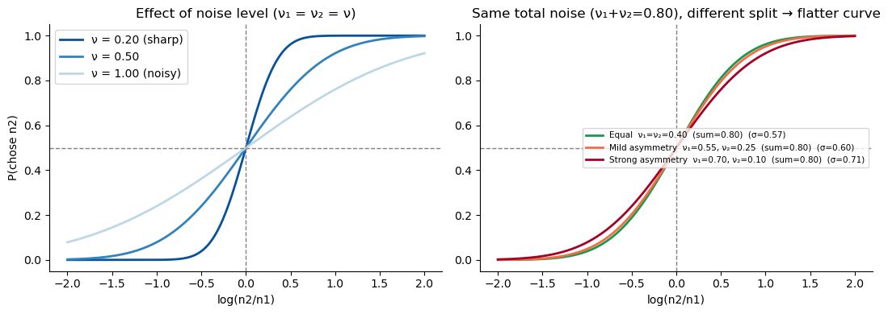
Bayesian inference and the central tendency bias¶
The Bayesian observer¶
The NLC observer does not simply report the noisy measurement \(r = \log n + \epsilon\). Instead, they act as an ideal Bayesian observer: they combine the noisy evidence with a prior belief about what magnitudes are likely to appear in the experiment. If the prior is \(\mathcal{N}(\mu_0, \sigma_0^2)\) and the likelihood is \(\mathcal{N}(\log n, \nu^2)\), Bayes’ rule gives a Gaussian posterior:
The posterior mean \(\hat\mu\) is a weighted average of the raw evidence \(r\) and the prior mean \(\mu_0\). The weight given to the prior, \(1 - \gamma\), is larger when the noise \(\nu\) is large (the evidence is unreliable) or the prior is narrow (the observer is confident about the range of stimuli).
Central tendency bias¶
Because the prior pulls representations toward \(\mu_0\), stimuli larger than \(\mu_0\) are underestimated and stimuli smaller than \(\mu_0\) are overestimated. This systematic compression toward the prior mean is the central tendency effect — a well-documented perceptual bias.
[3]:
fig, axes = plt.subplots(1, 2, figsize=(11, 4))
x = np.linspace(0.5, 5.5, 400) # log-magnitude axis
log_n_true = np.log(20) # true stimulus: n=20
prior_mu = np.log(10) # prior centred at n=10
nu = 0.4 # measurement noise
for ax, (prior_sd, title) in zip(axes,
[(1.0, 'Weak prior (σ₀ = 1.0)'),
(0.25, 'Strong prior (σ₀ = 0.25)')]):
gamma = prior_sd**2 / (prior_sd**2 + nu**2)
post_mu = prior_mu + gamma * (log_n_true - prior_mu)
post_sd = np.sqrt(prior_sd**2 * nu**2 / (prior_sd**2 + nu**2))
like = scipy_norm.pdf(x, log_n_true, nu)
prior = scipy_norm.pdf(x, prior_mu, prior_sd)
post = scipy_norm.pdf(x, post_mu, post_sd)
mx = max(like.max(), prior.max(), post.max())
ax.fill_between(x, prior/mx, alpha=.3, color='#4393c3', label=f'Prior μ₀={prior_mu:.2f}')
ax.fill_between(x, like/mx, alpha=.3, color='#d6604d', label=f'Evidence log(n)={log_n_true:.2f}')
ax.fill_between(x, post/mx, alpha=.5, color='#4dac26', label=f'Posterior μ̂={post_mu:.2f}')
ax.axvline(log_n_true, ls='--', c='#d6604d', lw=1.5)
ax.axvline(prior_mu, ls='--', c='#4393c3', lw=1.5)
ax.axvline(post_mu, ls='-', c='#4dac26', lw=2.5)
ax.set_xlabel('Internal log-magnitude representation')
ax.set_ylabel('Probability density (normalised)')
ax.set_title(title)
ax.legend(fontsize=8)
sns.despine(ax=ax)
plt.suptitle('Central tendency: posterior mean is pulled toward the prior', y=1.02)
plt.tight_layout()
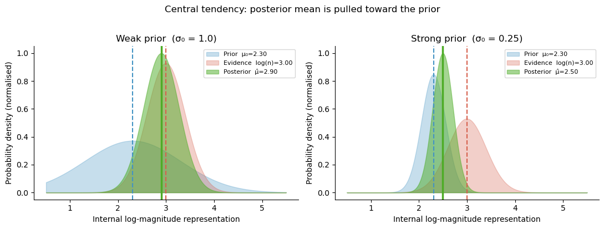
Why asymmetric noise creates magnitude–order interactions¶
In a sequential task, \(n_1\) is noisier than \(n_2\) because of memory degradation: \(\nu_1 > \nu_2\). The Bayesian posterior mean is
The weight \(\gamma_k\) is different for the two options whenever \(\nu_1 \neq \nu_2\).
The noisier option (usually \(n_1\)) gets a smaller weight \(\gamma_1\), meaning its posterior is pulled more toward \(\mu_0\).
The less noisy option (usually \(n_2\)) gets a larger weight \(\gamma_2\) and is pulled less toward \(\mu_0\).
If \(\mu_0\) is set to the mean of the log-stimulus distribution, then large stimuli are underestimated and small stimuli are overestimated. Because \(n_1\) is underestimated more than \(n_2\), the observer is effectively biased toward choosing :math:`n_2` when both are large (big \(n_1\) is shrunk, making \(n_2\) look relatively bigger), and against choosing :math:`n_2` when both are small (small \(n_1\) is inflated, making \(n_2\) look relatively smaller).
This is the source of the magnitude–order interaction: it is not asymmetric noise per se that causes it, but asymmetric noise interacting with a Bayesian prior that compresses different options by different amounts. Equal noise on both options would produce a uniform shift of the midpoint — no interaction with the reference magnitude.
The NLC model captures all of this with just three parameters per subject: \(\nu_1\), \(\nu_2\), and \(\sigma_0\) (prior width).
[4]:
# Illustrate the interaction: how the choice bias changes with n1 and noise asymmetry
log_r_range = np.linspace(-2, 2, 400)
nu1_values = [0.3, 0.5, 0.8] # increasing memory noise on n1
nu2 = 0.3 # fixed perceptual noise on n2
prior_sd = 0.6 # moderate prior
prior_mu = 0.0 # centred (mean of log-stimulus distribution)
fig, axes = plt.subplots(1, 2, figsize=(13, 4.5))
pal = sns.color_palette('Reds_d', len(nu1_values))
# Left: large n1 (above prior mean); Right: small n1 (below prior mean)
for ax, log_n1, n1_label in zip(axes, [1.5, -1.5],
['Large n₁ (above prior → compressed down)',
'Small n₁ (below prior → compressed up)']):
for nu1, c in zip(nu1_values, pal):
gamma1 = prior_sd**2 / (prior_sd**2 + nu1**2)
gamma2 = prior_sd**2 / (prior_sd**2 + nu2**2)
log_n2_vals = log_n1 + log_r_range
mu1_hat = prior_mu + gamma1 * (log_n1 - prior_mu)
mu2_hat = prior_mu + gamma2 * (log_n2_vals - prior_mu)
sigma_total = np.sqrt(prior_sd**2 * nu1**2 / (prior_sd**2 + nu1**2)
+ prior_sd**2 * nu2**2 / (prior_sd**2 + nu2**2))
p = scipy_norm.cdf((mu2_hat - mu1_hat) / (np.sqrt(2) * sigma_total))
ax.plot(log_r_range, p, color=c, lw=2.5,
label=f'ν₁={nu1:.1f}, ν₂={nu2:.1f}')
ax.axhline(.5, ls='--', c='gray', lw=1)
ax.axvline(0, ls='--', c='gray', lw=1)
ax.set_xlabel('log(n₂ / n₁)')
ax.set_ylabel('P(chose n₂)')
ax.set_title(n1_label)
ax.legend(fontsize=8.5); sns.despine(ax=ax)
plt.suptitle('Asymmetric noise + prior: curve shift depends on reference magnitude',
fontsize=12, y=1.02)
plt.tight_layout()
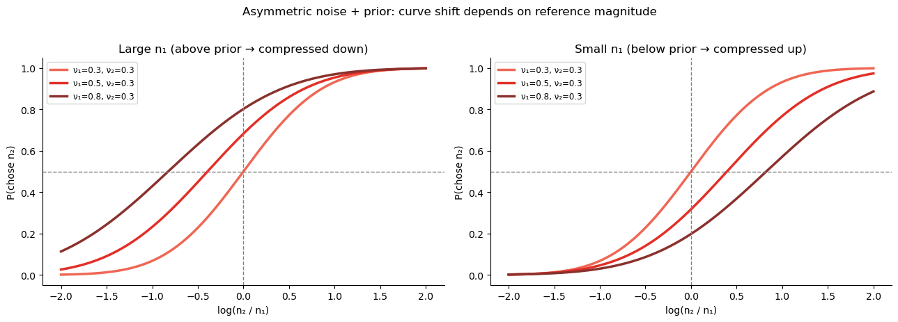
Barreto-García et al. (2023): Magnitude comparison task¶
With the theory in place, we now fit models to real data. The dataset from Barreto-García et al. (2023) is bundled with bauer and contains magnitude comparison choices from 64 participants. On each trial participants viewed two sequentially presented coin clouds (visual dot arrays) and judged which contained more 1-CHF coins.
Reference magnitudes: \(n_1 \in \{5, 7, 10, 14, 20, 28\}\)
Comparison magnitudes: \(n_2\) varied over a wide range
The
choicecolumn encodesTrue= chose \(n_2\) (the second cloud)
bauer provides a one-liner to load the data:
[5]:
import pandas as pd
import arviz as az
from bauer.utils.data import load_garcia2022
from bauer.models import MagnitudeComparisonModel
data = load_garcia2022(task='magnitude')
print(f"Subjects: {data.index.get_level_values('subject').nunique()}, "
f"Trials: {len(data)}")
data.head()
Subjects: 64, Trials: 13824
[5]:
| cueonset1 | cueoffset1 | cueonset2 | cueoffset2 | stimonset1 | stimoffset1 | isistimonset | isistimoffset | stimonset2 | stimoffset2 | ... | prob_value | diffval | rad | correct | leftright | pressedkey | n1 | n2 | choice | log(n1/n2) | ||||
|---|---|---|---|---|---|---|---|---|---|---|---|---|---|---|---|---|---|---|---|---|---|---|---|---|
| subject | format | run | trial_nr | |||||||||||||||||||||
| 1 | non-symbolic | 1 | 1 | 35070 | 36600 | 36600 | 37630 | 37630 | 38243 | 38276 | 46276 | 46276 | 46903 | ... | 10 | -3 | 190 | -1 | -1 | 49 | 7 | 10 | True | -0.356675 |
| 2 | 50095 | 51614 | 51614 | 52628 | 52628 | 53248 | 53280 | 61780 | 61780 | 62380 | ... | 14 | -9 | 170 | -1 | 1 | 51 | 5 | 14 | False | -1.029619 | |||
| 3 | 65565 | 67087 | 67087 | 68095 | 68095 | 68719 | 68752 | 75252 | 75252 | 75852 | ... | 14 | -7 | 210 | -1 | -1 | 49 | 7 | 14 | True | -0.693147 | |||
| 4 | 79005 | 80523 | 80523 | 81527 | 81527 | 82147 | 82180 | 89180 | 89180 | 89810 | ... | 10 | -3 | 210 | -1 | -1 | 49 | 7 | 10 | True | -0.356675 | |||
| 5 | 92946 | 94467 | 94467 | 95473 | 95473 | 96096 | 96129 | 105129 | 105129 | 105754 | ... | 10 | -5 | 150 | -1 | -1 | 49 | 5 | 10 | True | -0.693147 |
5 rows × 38 columns
[6]:
# Compute log-ratio for each trial and bin for plotting
data['log(n2/n1)'] = np.log(data['n2'] / data['n1'])
data['bin'] = (pd.cut(data['log(n2/n1)'], bins=12)
.map(lambda x: x.mid).astype(float))
grouped = (data.groupby(['n1', 'bin'])['choice']
.agg(['mean', 'count']).reset_index()
.query('count >= 5'))
n1_unique = sorted(grouped['n1'].unique())
pal_n1 = sns.color_palette('YlOrRd', len(n1_unique))
n1_colors = dict(zip(n1_unique, pal_n1))
fig, ax = plt.subplots(figsize=(7, 5))
for n1_val in n1_unique:
d = grouped[grouped['n1'] == n1_val]
ax.plot(d['bin'], d['mean'], 'o-', ms=5, lw=1.5,
color=n1_colors[n1_val], label=f'n₁ = {n1_val}')
ax.axhline(.5, ls='--', c='gray', lw=1)
ax.axvline(.0, ls='--', c='gray', lw=1)
ax.set_ylim(-.05, 1.05)
ax.set_xlabel('log(n₂ / n₁)')
ax.set_ylabel('P(chose n₂)')
ax.set_title('Log-ratio scale: all n₁ curves collapse (scale invariance)')
ax.legend(title='Reference n₁', fontsize=9)
sns.despine(); plt.tight_layout()
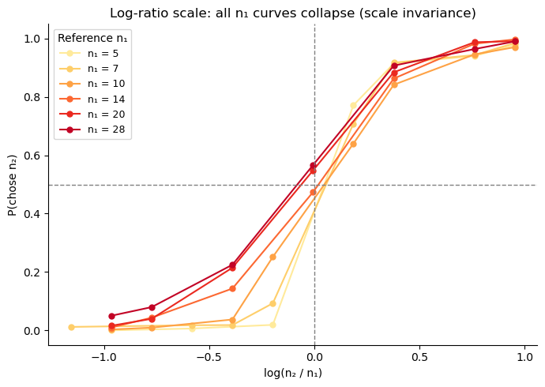
The curves collapse when plotted against \(\log(n_2/n_1)\), confirming the NLC model’s scale-invariance prediction. The overlap is not perfect — small \(n_1\) (5, 7) produce slightly steeper curves, hinting at a mild departure from strict Weber’s law at low magnitudes. Compare this with the natural-scale plots below.
Weber’s law: what linear encoding gets wrong¶
If we model choices in natural (linear) space and use a fixed noise \(\nu\), the slope of the psychometric function would be the same for all \(n_1\) values. But the data shows a clear pattern: steeper curves for small :math:`n_1`, shallower for large :math:`n_1`. This is Weber’s law — discrimination is proportionally harder for larger magnitudes.
[7]:
# Natural-space psychometric curves: slope and indifference point shift with n1
n1_unique = sorted(data['n1'].unique())
pal_n1 = sns.color_palette('YlOrRd', len(n1_unique))
fig, axes = plt.subplots(2, 3, figsize=(12, 7.5), sharey=True)
axes = axes.flatten()
for ax, n1_val, c in zip(axes, n1_unique, pal_n1):
d_n1 = data[data['n1'] == n1_val]
grp = (d_n1.groupby('n2')['choice']
.agg(['mean', 'count']).reset_index()
.query('count >= 3'))
ax.scatter(grp['n2'], grp['mean'], color=c, s=25, alpha=.8)
ax.plot(grp['n2'], grp['mean'], color=c, lw=1.5)
ax.axhline(.5, ls='--', c='gray', lw=1)
ax.axvline(n1_val, ls=':', c='tomato', lw=2, label=f'n2 = n1 = {n1_val}')
ax.set_title(f'n1 = {n1_val}')
ax.set_xlabel('n2 (linear scale)')
ax.set_ylim(-.05, 1.05)
ax.legend(fontsize=7.5)
sns.despine(ax=ax)
axes[0].set_ylabel('P(chose n2)')
plt.suptitle(
'Natural-space: slope decreases with n₁ → Weber’s law',
fontsize=12, y=1.01)
plt.tight_layout()
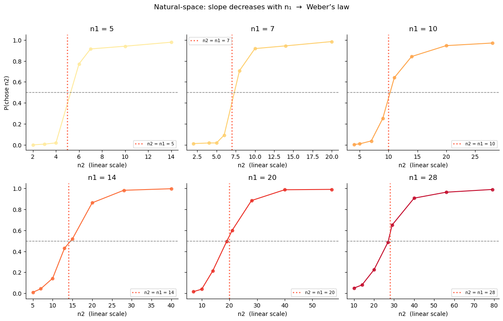
Recovering Weber’s law non-parametrically¶
The NLC model assumes log-space encoding and derives Weber’s law as a consequence. But we can also test Weber’s law without assuming log encoding, by fitting a model that works in natural space — that is, the space of raw stimulus magnitudes \(n\), not \(\log n\).
PsychometricRegressionModel is a simple psychometric-function model that takes two stimuli \(x_1, x_2\) and fits the probability of choosing \(x_2\) as:
where the noise \(\nu\) is now in the same units as \(n\) (dots on screen), not in log-units. By using regressors={'nu': 'C(n1)'}, we estimate a separate :math:`nu` for each reference magnitude \(n_1\) — no functional form is assumed.
If Weber’s law holds, we expect \(\nu(n_1) \propto n_1\): noise in natural space should grow proportionally with magnitude. This is the empirical signature of log-space encoding when measured from outside, in the raw stimulus space.
[8]:
from bauer.models import PsychometricRegressionModel
# x1 = n1, x2 = n2 in natural space (raw magnitudes, not log-transformed)
data_lin = data.copy()
data_lin['x1'] = data_lin['n1'].astype(float)
data_lin['x2'] = data_lin['n2'].astype(float)
# C(n1): categorical coding — separate nu per n1 level, no linearity assumption
model_lin_reg = PsychometricRegressionModel(
paradigm=data_lin,
regressors={'nu': 'C(n1)'},
)
model_lin_reg.build_estimation_model(data=data_lin, hierarchical=True)
idata_lin_reg = model_lin_reg.sample(draws=150, tune=150, chains=4, progressbar=False)
Initializing NUTS using jitter+adapt_diag...
Multiprocess sampling (4 chains in 4 jobs)
NUTS: [nu_mu, nu_sd, nu_offset, bias_mu, bias_sd, bias_offset]
Sampling 4 chains for 150 tune and 150 draw iterations (600 + 600 draws total) took 62 seconds.
There was 1 divergence after tuning. Increase `target_accept` or reparameterize.
The rhat statistic is larger than 1.01 for some parameters. This indicates problems during sampling. See https://arxiv.org/abs/1903.08008 for details
The effective sample size per chain is smaller than 100 for some parameters. A higher number is needed for reliable rhat and ess computation. See https://arxiv.org/abs/1903.08008 for details
[9]:
# Extract group-level nu at each unique n1 level via the model's design matrix
conditions_n1 = pd.DataFrame({'n1': n1_unique})
cond_pars = model_lin_reg.get_conditionwise_parameters(idata_lin_reg, conditions_n1, group=True)
nu_at_n1 = cond_pars.xs('nu', level='parameter') # posterior samples × n1 levels
nu_mean = nu_at_n1.mean(0).values
nu_lo, nu_hi = np.percentile(nu_at_n1.values, [2.5, 97.5], axis=0)
n1_arr = np.array(n1_unique, dtype=float)
fig, ax = plt.subplots(figsize=(7, 4.5))
ax.fill_between(n1_arr, nu_lo, nu_hi, alpha=.30, color='#d73027', label='95 % credible interval')
ax.plot(n1_arr, nu_mean, lw=2, color='#d73027', marker='o', ms=6,
label='Group-level ν(n₁) (C(n1) model)')
# Weber's law reference: proportional noise ν ∝ n1
k_weber = nu_mean[0] / n1_arr[0]
ax.plot(n1_arr, k_weber * n1_arr, '--k', lw=1.5,
label=f'Weber reference (ν = {k_weber:.2f}×n₁)')
ax.set_xlabel('Reference magnitude n₁')
ax.set_ylabel('Linear-space noise ν')
ax.set_title('Per-level ν(n₁): proportional growth confirms Weber’s law')
ax.legend(fontsize=9)
sns.despine()
plt.tight_layout()
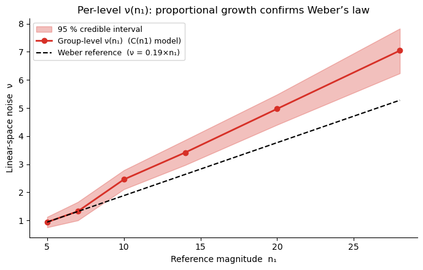
Key takeaway: \(\nu\) grows proportionally to \(n_1\). This is precisely Weber’s law, and it is automatically accounted for when noise is constant on a log scale (the NLC model). There is no need to model the \(n_1\)-dependence of noise explicitly: logarithmic encoding produces it for free. This is why MagnitudeComparisonModel works so well — and why the next section fits it to the data.
Fitting MagnitudeComparisonModel with bauer¶
Why use bauer?¶
You could code a PyMC model by hand. But bauer gives you:
Feature |
What it means in practice |
|---|---|
One-line model construction |
|
Hierarchical structure automatically |
Group mean + between-subject SD inferred jointly with subject parameters |
Prior transforms baked in |
Noise parameters are always positive (softplus link), lapse rates in [0,1] |
Formula-based regression |
|
Built-in PPC |
|
ArviZ-native output |
All posteriors as |
Why hierarchical modelling is essential¶
In a typical psychophysics experiment each participant sees a few hundred trials at most. Fitting a multi-parameter cognitive model to 100–200 trials per subject gives very noisy, often unidentifiable individual estimates. The more expressive and theoretically interesting the model, the worse this problem becomes: a 4-parameter model needs far more data per subject than a 2-parameter model.
Hierarchical (multilevel) modelling solves this by assuming that participants are drawn from a shared population. Each subject \(s\) gets their own parameters, but those parameters are regularised toward the group mean — subjects with little data or extreme estimates are pulled back toward the population, while subjects with lots of clear data are left mostly alone. This partial pooling gives you the best of both worlds:
Individual differences are preserved — unlike a single group-level fit.
Noisy individuals are stabilised — unlike fitting each subject independently.
Complex models become feasible even at modest trial counts, because the group prior acts as a principled regulariser that prevents overfitting.
In practice, hierarchical fitting is what makes it possible to use models like the KLW risk model (lesson 2) or the flexible-noise model (lesson 4) on real experimental data. Without the group-level regularisation, the posterior for many subjects would be dominated by the prior and the individual estimates would be meaningless.
Hierarchical parameter structure in bauer¶
For the noise parameters, bauer sets up the hierarchy as:
where \(\mu_k\) (n{k}_evidence_sd_mu) is the group mean and \(\sigma_k\) (n{k}_evidence_sd_sd) is the between-subject spread. The posterior therefore contains both the population-level estimate and the full distribution of individual differences.
MCMC sampling and posterior summaries¶
.sample() runs Markov Chain Monte Carlo (MCMC) — specifically, PyMC’s No-U-Turn Sampler (NUTS). MCMC generates a large collection of samples that, after a warm-up (“tuning”) phase, are drawn proportionally to the posterior probability. The key idea: rather than returning a single best-fit value, MCMC gives you a distribution over parameter values that reflects both what the data support and how uncertain we are.
Two numbers summarise that distribution most usefully:
Posterior mean — the expected value of the parameter.
Highest Density Interval (HDI) — the shortest interval containing a given probability mass (typically 94 % or 95 %). Unlike a frequentist confidence interval, the HDI can be read directly: “there is 94 % posterior probability that the true value lies in this range.”
ArviZ’s az.plot_posterior displays both automatically. bauer exposes the samples as an arviz.InferenceData object so all ArviZ diagnostics work out-of-the-box.
[10]:
model_mag = MagnitudeComparisonModel(paradigm=data)
model_mag.build_estimation_model(data=data, hierarchical=True, save_p_choice=True)
idata_mag = model_mag.sample(draws=200, tune=200, chains=4, progressbar=False)
Initializing NUTS using jitter+adapt_diag...
Multiprocess sampling (4 chains in 4 jobs)
NUTS: [n1_evidence_sd_mu_untransformed, n1_evidence_sd_sd, n1_evidence_sd_offset, n2_evidence_sd_mu_untransformed, n2_evidence_sd_sd, n2_evidence_sd_offset]
Sampling 4 chains for 200 tune and 200 draw iterations (800 + 800 draws total) took 46 seconds.
The rhat statistic is larger than 1.01 for some parameters. This indicates problems during sampling. See https://arxiv.org/abs/1903.08008 for details
The effective sample size per chain is smaller than 100 for some parameters. A higher number is needed for reliable rhat and ess computation. See https://arxiv.org/abs/1903.08008 for details
Group-level posteriors¶
az.plot_posterior gives us the group-level posteriors for \(\nu_1\) and \(\nu_2\). The 94 % HDI quantifies our uncertainty about the group mean. We expect \(\nu_1 > \nu_2\) because of working-memory degradation for the first-presented option.
[11]:
az.plot_posterior(
idata_mag,
var_names=['n1_evidence_sd_mu', 'n2_evidence_sd_mu'],
figsize=(9, 3),
)
plt.suptitle('Group-level noise posteriors (ν₁ = first option, ν₂ = second option)', y=1.04)
plt.tight_layout()
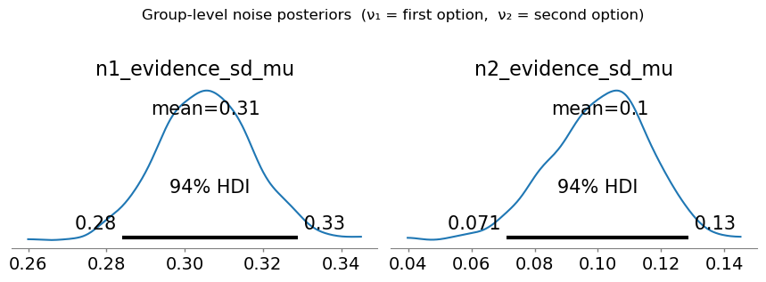
The group-level posterior for \(\nu_1\) (n1_evidence_sd_mu) is consistently larger than for \(\nu_2\) (n2_evidence_sd_mu) — working-memory degradation in action.
Individual subject estimates with 95 % credible intervals¶
The posterior also contains a full distribution for each individual subject. bauer provides two complementary tools:
plot_subjectwise_parameters(idata, parameter, ax=ax)— direct call for a single parameterget_subject_posterior_df(idata, parameters)+plot_subjectwise_pointplot— tidy DataFrame workflow compatible withsns.FacetGrid(supports hue, facetting, etc.)
[12]:
from bauer.utils import (plot_subjectwise_parameters,
get_subject_posterior_df, plot_subjectwise_pointplot)
# ── FacetGrid workflow: one panel per parameter ───────────────────────────────
df_post = get_subject_posterior_df(
idata_mag, ['n1_evidence_sd', 'n2_evidence_sd'])
g = sns.FacetGrid(df_post, col='parameter', sharey=True, height=4.5, aspect=1.1)
g.map_dataframe(plot_subjectwise_pointplot) # uses default mean_col='mean', lo_col='lo', hi_col='hi'
g.set_axis_labels('Subject (sorted)', 'Noise ν')
g.set_titles(col_template='{col_name}')
g.figure.suptitle('Subject-level noise estimates (error bars = 94 % HDI)', y=1.04)
# Add group-mean line to each panel
for ax, param in zip(g.axes.flat, ['n1_evidence_sd', 'n2_evidence_sd']):
mu_key = param + '_mu'
if mu_key in idata_mag.posterior:
gm = idata_mag.posterior[mu_key].values.mean()
ax.axhline(gm, ls='--', lw=1.5, alpha=0.6, color='steelblue',
label='Group mean')
sns.despine(ax=ax)
plt.tight_layout()
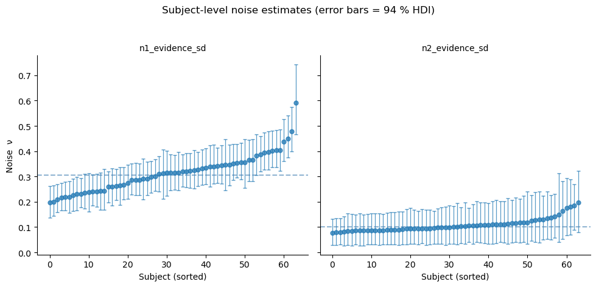
[13]:
# ── Scatter: ν₁ vs ν₂ per subject with 94 % HDI error bars ───────────────────
n_subj = idata_mag.posterior['n1_evidence_sd'].shape[-1]
s1 = idata_mag.posterior['n1_evidence_sd'].values.reshape(-1, n_subj)
s2 = idata_mag.posterior['n2_evidence_sd'].values.reshape(-1, n_subj)
nu1_mean, nu2_mean = s1.mean(0), s2.mean(0)
nu1_lo, nu1_hi = np.percentile(s1, [3, 97], axis=0)
nu2_lo, nu2_hi = np.percentile(s2, [3, 97], axis=0)
fig, ax = plt.subplots(figsize=(5.5, 5))
ax.errorbar(nu2_mean, nu1_mean,
xerr=[nu2_mean - nu2_lo, nu2_hi - nu2_mean],
yerr=[nu1_mean - nu1_lo, nu1_hi - nu1_mean],
fmt='o', ms=5, alpha=.65, elinewidth=0.7, capsize=2.5,
color='#2166ac', ecolor='#9ecae1', zorder=3)
lim = max(nu1_hi.max(), nu2_hi.max()) * 1.1
ax.plot([0, lim], [0, lim], 'k--', lw=1.2, label='ν₁ = ν₂')
ax.set_xlabel('Second-option noise ν₂')
ax.set_ylabel('First-option noise ν₁')
ax.set_title('ν₁ vs ν₂ — most subjects above diagonal (memory noise)')
ax.legend(fontsize=9); sns.despine(ax=ax)
plt.tight_layout()
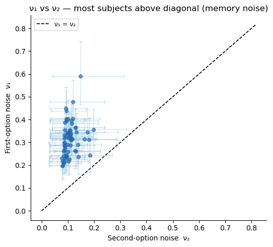
Posterior predictive check¶
We draw predicted choice probabilities from the full posterior and overlay the 95 % credible interval on the observed group-average data (one panel per \(n_1\) value). A good fit means the shaded band covers the observed dots — and the model should also capture the different slopes across \(n_1\) values (the Weber’s-law signature).
[14]:
from bauer.utils import summarize_ppc_group
# Simulate binary choices from the posterior predictive
ppc_df = model_mag.ppc(data, idata_mag, var_names=['ll_bernoulli'])
ppc_ll = ppc_df.xs('ll_bernoulli', level='variable') # trials × posterior samples
ppc_flat = ppc_ll.reset_index()
ppc_flat['bin'] = (pd.cut(-ppc_flat['log(n1/n2)'], 12)
.map(lambda x: x.mid).astype(float))
g_ppc = summarize_ppc_group(ppc_flat, condition_cols=['n1', 'bin'])
g_ppc = g_ppc.rename(columns={'p_predicted': 'p_mean', 'hdi025': 'p_lo', 'hdi975': 'p_hi'})
data_copy = data.reset_index()
data_copy['bin'] = (pd.cut(-data_copy['log(n1/n2)'], 12)
.map(lambda x: x.mid).astype(float))
obs = (data_copy.groupby(['subject', 'n1', 'bin'])['choice'].mean()
.groupby(['n1', 'bin']).mean())
g_ppc['choice'] = obs
g_ppc = g_ppc.reset_index()
import matplotlib.patches as mpatches
def draw_ppc(data, **kwargs):
ax = plt.gca()
ax.fill_between(data['bin'], data['p_lo'], data['p_hi'],
color='steelblue', alpha=.25)
ax.plot(data['bin'], data['p_mean'], color='steelblue', lw=2)
ax.scatter(data['bin'], data['choice'], color='steelblue', s=20, zorder=5)
ax.axhline(.5, ls='--', c='gray', lw=1)
ax.axvline(0, ls='--', c='gray', lw=1)
ax.set_ylim(-.05, 1.05)
g = sns.FacetGrid(g_ppc, col='n1', col_wrap=3, height=3.2, aspect=1.1, sharey=True)
g.map_dataframe(draw_ppc)
g.set_axis_labels('log(n2 / n1)', 'P(chose n2)')
g.set_titles('n₁ = {col_name}')
for ax in g.axes.flat:
sns.despine(ax=ax)
legend_handles = [
mpatches.Patch(color='steelblue', alpha=.25, label='95 % credible interval'),
plt.Line2D([0], [0], color='steelblue', lw=2, label='Model mean'),
plt.Line2D([0], [0], marker='o', color='w', markerfacecolor='steelblue',
markersize=6, label='Observed'),
]
g.figure.legend(handles=legend_handles, loc='lower center', ncol=3,
fontsize=9, bbox_to_anchor=(.5, -.04))
g.figure.suptitle('Posterior predictive check — MagnitudeComparisonModel',
fontsize=13, y=1.02)
g.figure.tight_layout()
Sampling: [ll_bernoulli]
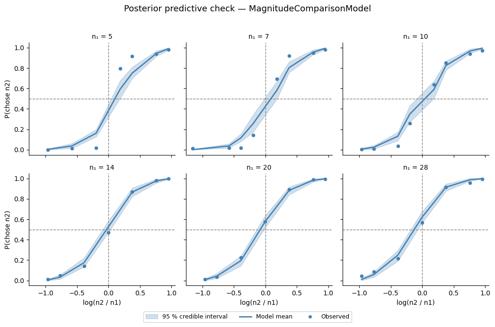
[15]:
# PPC overlay: all n1 values in one panel (hue = n1)
n1_pal = sns.color_palette('YlOrRd', g_ppc['n1'].nunique())
n1_colors = dict(zip(sorted(g_ppc['n1'].unique()), n1_pal))
fig, ax = plt.subplots(figsize=(8, 5))
for n1_val in sorted(g_ppc['n1'].unique()):
d = g_ppc[g_ppc['n1'] == n1_val].sort_values('bin')
c = n1_colors[n1_val]
ax.fill_between(d['bin'], d['p_lo'], d['p_hi'], alpha=.15, color=c)
ax.plot(d['bin'], d['p_mean'], lw=2, color=c, label=f'n₁ = {n1_val}')
ax.scatter(d['bin'], d['choice'], s=20, color=c, zorder=5)
ax.axhline(.5, ls='--', c='gray', lw=1)
ax.axvline(0, ls='--', c='gray', lw=1)
ax.set_ylim(-.05, 1.05)
ax.set_xlabel('log(n₂ / n₁)')
ax.set_ylabel('P(chose n₂)')
ax.set_title('PPC overlay: model predictions (bands) vs data (dots) by n₁')
ax.legend(title='Reference n₁', fontsize=9)
sns.despine(); plt.tight_layout()
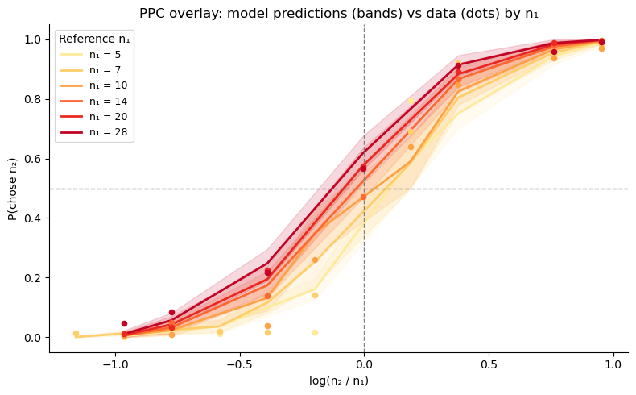
Summary¶
In this lesson we built up the NLC model from first principles:
Logarithmic encoding of numerical magnitudes, with Gaussian noise \(\nu\).
Scale invariance: the psychometric function collapses to a single sigmoid on the log-ratio axis.
Noise level controls slope; asymmetric noise (\(\nu_1 > \nu_2\)) flattens the curve without shifting it.
Bayesian prior produces the central tendency bias; asymmetric noise interacting with the prior creates magnitude–order interactions.
Weber’s law falls out automatically from log-space encoding.
bauer fits all parameters hierarchically in a few lines, yielding full posterior distributions at both the group and individual-subject level.
In Lesson 2 we move to risky choice and see how the same perceptual noise parameters that distort magnitude perception also drive risk attitudes.